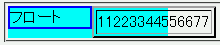

このとき、テーブル自身やその内容物がフロートを避けず、フロートに重なってしまう。
<div style="float:left; width:5em; border:2px solid blue;"> フロート</div> <div style="width:10em; background:aqua;"> <table border="2"> <tr><td>11223344556677</td></tr> </table> </div>
| 11223344556677 |
フロートに後続するdiv要素の内容物が（内容領域からはみ出さずに）フロートの右に回りこむことができる空間の幅は約4emですが、テーブルの幅はそれを超えています。
N7.1での表示（標準モード）
Opera7.2での表示（標準モード）
Opera7.03の標準・互換モードとOpera7.1以降の互換モードではWinIE6.0互換モードに相当する表示をします（WinIEバグ054参照）。フロートに重なる不具合は発生しませんが、これはCSS2勧告に準じていない実装です。
なお、Opera6.06はNetscape7と同様の結果になります。